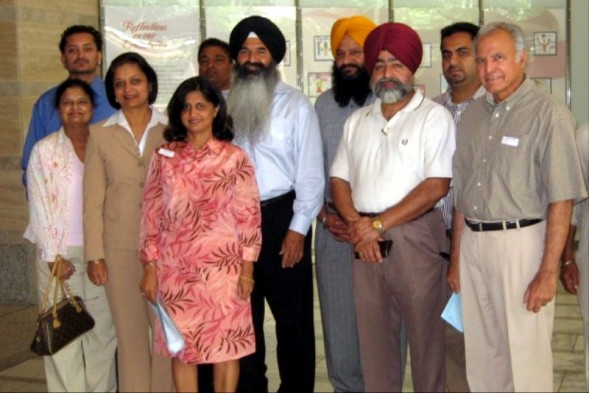

|
|
 | Chronology 1880 - |
|
Pioneers
List (Choose from below) |
Please contact us at sikhpioneers@gmail.com
Last Revised 02/17/2009
Web Site updated by:
Fei Li,
Vincent Caccese, Mariella Guzman-Aguillar, Alejandra Hernandez, Carrie Rushby,
Rosabelle Sylvester, Rehan Tahir, Jim Toledo, and Helen
Bilyk., Abrin Sodhi